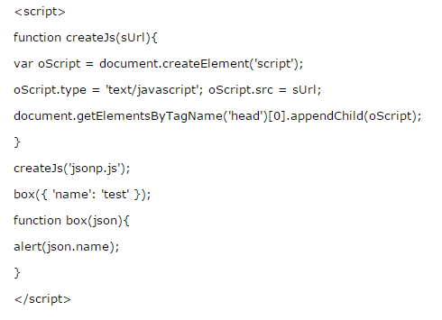
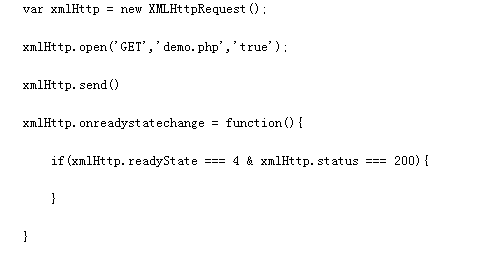
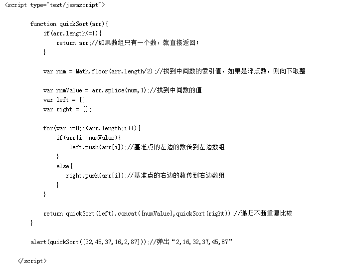
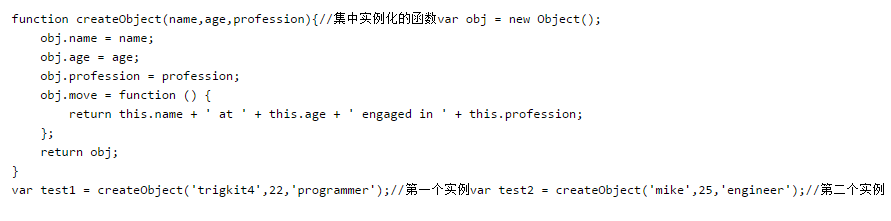
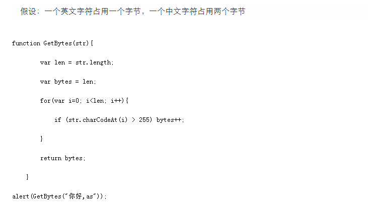

高级前端面试题收集
面试题
- 1.position的值,relative和absolute分别是相对于谁进行定位的？
-
- absolute :生成绝对定位的元素， 相对于最近一级的 定位不是 static 的父元素来进行定位。
- fixed （老IE不支持）生成绝对定位的元素，通常相对于浏览器窗口或 frame 进行定位。
- relative 生成相对定位的元素，相对于其在普通流中的位置进行定位。
- static 默认值。没有定位，元素出现在正常的流中
- sticky 生成粘性定位的元素，容器的位置根据正常文档流计算得出
- 2.如何解决跨域问题
-
JSONP：
原理是：动态插入 script 标签，通过 script 标签引入一个js文件，这个js文件载入成功后会执行我们在url参数中指定的函数，并且会把我们需要的 json 数据作为参数传入。
由于同源策略的限制， XmlHttpRequest 只允许请求当前源（域名、协议、端口）的资源，为了实现跨域请求，可以通过 script 标签实现跨域请求，然后在服务端输出JSON数据并执行回调函数，从而解决了跨域的数据请求。
优点是兼容性好，简单易用，支持浏览器与服务器双向通信。缺点是只支持GET请求。JSONP ： json+padding （内填充），顾名思义，就是把JSON填充到一个盒子里

CORS
服务器端对于 CORS 的支持，主要就是通过设置 Access-Control-Allow-Origin 来进行的。如果浏览器检测到相应的设置，就可以允许 Ajax 进行跨域的访问。
通过修改document.domain来跨子域
将子域和主域的 document.domain 设为同一个主域.前提条件：这两个域名必须属于同一个基础域名!而且所用的协议，端口都要一致，否则无法利用 document.domain 进行跨域
主域相同的使用 document.domain
使用window.name来进行跨域
window 对象有个 name 属性，该属性有个特征：即在一个窗口(window)的生命周期内,窗口载入的所有的页面都是共享一个 window.name 的，每个页面对 window.name 都有读写的权限， window.name 是持久存在一个窗口载入过的所有页面中的
使用HTML5中新引进的 window.postMessage 方法来跨域传送数据
还有flash、在服务器上设置代理页面等跨域方式。个人认为 window.name 的方法既不复杂，也能兼容到几乎所有浏览器，这真是极好的一种跨域方法。
- 3.XML 和 JSON 的区别？
-
(1).数据体积方面。 JSON相对于XML来讲，数据的体积小，传递的速度更快些。
(2).数据交互方面。 JSON与JavaScript的交互更加方便，更容易解析处理，更好的数据交互。
(3).数据描述方面。 JSON对数据的描述性比XML较差。
(4).传输速度方面。 JSON的速度要远远快于XML。
- 4.谈谈你对webpack的看法
-
WebPack 是一个模块打包工具，你可以使用 WebPack 管理你的模块依赖，并编绎输出模块们所需的静态文件。它能够很好地管理、打包Web开发中所用到的 HTML、JavaScript、CSS 以及各种静态文件（图片、字体等），让开发过程更加高效。对于不同类型的资源， webpack 有对应的模块加载器。 webpack 模块打包器会分析模块间的依赖关系，最后 生成了优化且合并后的静态资源。
webpack 的两大特色：
1.code splitting（可以自动完成）
2.loader 可以处理各种类型的静态文件，并且支持串联操作
webpack 是以 commonJS 的形式来书写脚本滴，但对 AMD/CMD 的支持也很全面，方便旧项目进行代码迁移。
webpack 具有 requireJs 和 browserify 的功能，但仍有很多自己的新特性：
1. 对 CommonJS 、 AMD 、ES6的语法做了兼容
2. 对js、css、图片等资源文件都支持打包
3. 串联式模块加载器以及插件机制，让其具有更好的灵活性和扩展性，例如提供对CoffeeScript、ES6的支持
4. 有独立的配置文件webpack.config.js
5. 可以将代码切割成不同的chunk，实现按需加载，降低了初始化时间
6. 支持 SourceUrls 和 SourceMaps，易于调试
7. 具有强大的Plugin接口，大多是内部插件，使用起来比较灵活
8.webpack 使用异步 IO 并具有多级缓存。这使得 webpack 很快且在增量编译上更加快
- 5.说说TCP传输的三次握手四次挥手策略
-
为了准确无误地把数据送达目标处， TCP 协议采用了三次握手策略。用TCP协议把数据包送出去后， TCP 不会对传送 后的情况置之不理，它一定会向对方确认是否成功送达。握手过程中使用了TCP的标志： SYN 和 ACK 。
发送端首先发送一个带 SYN 标志的数据包给对方。接收端收到后，回传一个带有 SYN/ACK 标志的数据包以示传达确认信息。 最后，发送端再回传一个带 ACK 标志的数据包，代表“握手”结束。 若在握手过程中某个阶段莫名中断， TCP 协议会再次以相同的顺序发送相同的数据包。
断开一个TCP连接则需要“四次握手”：
第一次挥手：主动关闭方发送一个 FIN ，用来关闭主动方到被动关闭方的数据传送，也就是主动关闭方告诉被动关闭方：我已经不 会再给你发数据了(当然，在fin包之前发送出去的数据，如果没有收到对应的ack确认报文，主动关闭方依然会重发这些数据)，但是，此时主动关闭方还可 以接受数据。
第二次挥手：被动关闭方收到 FIN 包后，发送一个 ACK 给对方，确认序号为收到序号 +1 （与 SYN 相同，一个 FIN 占用一个序号）。
第三次挥手：被动关闭方发送一个 FIN ，用来关闭被动关闭方到主动关闭方的数据传送，也就是告诉主动关闭方，我的数据也发送完了，不会再给你发数据了。
第四次挥手：主动关闭方收到 FIN 后，发送一个 ACK 给被动关闭方，确认序号为收到序号+1，至此，完成四次挥手。
- 6.TCP和UDP的区别
-
TCP （Transmission Control Protocol，传输控制协议）是基于连接的协议，也就是说，在正式收发数据前，必须和对方建立可靠的连接。一个 TCP 连接必须要经过三次“对话”才能建立起来
UDP （User Data Protocol，用户数据报协议）是与TCP相对应的协议。它是面向非连接的协议，它不与对方建立连接，而是直接就把数据包发送过去！ UDP适用于一次只传送少量数据、对可靠性要求不高的应用环境。
- 7.说说你对作用域链的理解
-
作用域链的作用是保证执行环境里有权访问的变量和函数是有序的，作用域链的变量只能向上访问，变量访问到 window 对象即被终止，作用域链向下访问变量是不被允许的。
- 8.创建ajax过程
-
(1)创建XMLHttpRequest对象,也就是创建一个异步调用对象.
(2)创建一个新的HTTP请求,并指定该HTTP请求的方法、URL及验证信息.
(3)设置响应HTTP请求状态变化的函数.
(4)发送HTTP请求.
(5)获取异步调用返回的数据.
(6)使用JavaScript和DOM实现局部刷新.

- 9.渐进增强和优雅降级
-
渐进增强 ：针对低版本浏览器进行构建页面，保证最基本的功能，然后再针对高级浏览器进行效果、交互等改进和追加功能达到更好的用户体验。
优雅降级 ：一开始就构建完整的功能，然后再针对低版本浏览器进行兼容。
- 10.常见web安全及防护原理
-
sql注入原理:就是通过把SQL命令插入到Web表单递交或输入域名或页面请求的查询字符串，最终达到欺骗服务器执行恶意的SQL命令。总的来说有以下几点：
1.永远不要信任用户的输入，要对用户的输入进行校验，可以通过正则表达式，或限制长度，对单引号和双"-"进行转换等。
2.永远不要使用动态拼装SQL，可以使用参数化的SQL或者直接使用存储过程进行数据查询存取。
3.永远不要使用管理员权限的数据库连接，为每个应用使用单独的权限有限的数据库连接。
4.不要把机密信息明文存放，请加密或者hash掉密码和敏感的信息。
XSS原理及防范:Xss(cross-site scripting)攻击指的是攻击者往Web页面里插入恶意 html 标签或者javascript 代码。比如：攻击者在论坛中放一个看似安全的链接，骗取用户点击后，窃取 cookie 中的用户私密信息；或者攻击者在论坛中加一个恶意表单，当用户提交表单的时候，却把信息传送到攻击者的服务器中，而不是用户原本以为的信任站点。 XSS防范方法：
首先代码里对用户输入的地方和变量都需要仔细检查长度和对 ”<”,”>”,”;”,”’”等字符做过滤；其次任何内容写到页面之前都必须加以 encode ，避免不小心把 html tag 弄出来。这一个层面做好，至少可以堵住超过一半的 XSS 攻击。
首先，避免直接在 cookie 中泄露用户隐私，例如email、密码等等。
其次，通过使 cookie 和系统 ip 绑定来降低 cookie 泄露后的危险。这样攻击者得到的 cookie 没有实际价值，不可能拿来重放。
如果网站不需要再浏览器端对 cookie 进行操作，可以在 Set-Cookie 末尾加上HttpOnly 来防止 javascript 代码直接获取 cookie 。
尽量采用 POST 而非 GET 提交表单
- 11.XSS与CSRF有什么区别吗?
-
XSS 是获取信息，不需要提前知道其他用户页面的代码和数据包。 CSRF 是代替用户完成指定的动作，需要知道其他用户页面的代码和数据包。
要完成一次 CSRF 攻击，受害者必须依次完成两个步骤：
登录受信任网站A，并在本地生成Cookie。
在不登出A的情况下，访问危险网站B。
CSRF的防御
服务端的 CSRF 方式方法很多样，但总的思想都是一致的，就是在客户端页面增加伪随机数。
通过验证码的方法
- 12.Web Worker 和webSocket
-
worker主线程:
1.通过 worker = new Worker( url ) 加载一个JS文件来创建一个worker，同时返回一个worker实例。
2.通过worker.postMessage( data ) 方法来向worker发送数据。
3.绑定worker.onmessage方法来接收worker发送过来的数据。
4.可以使用 worker.terminate() 来终止一个worker的执行。
WebSocket 是 Web 应用程序的传输协议，它提供了双向的，按序到达的数据流。他是一个 Html5 协议， WebSocket 的连接是持久的，他通过在客户端和服务器之间保持双工连接，服务器的更新可以被及时推送给客户端，而不需要客户端以一定时间间隔去轮询。
- 13.HTTP和HTTPS
-
HTTP 协议通常承载于TCP协议之上，在 HTTP 和 TCP 之间添加一个安全协议层（ SSL 或 TSL ），这个时候，就成了我们常说的HTTPS。
默认HTTP的端口号为80， HTTPS 的端口号为443。
- 14.为什么 HTTPS 安全?
-
因为网络请求需要中间有很多的服务器路由器的转发。中间的节点都可能篡改信息，而如果使用 HTTPS ，密钥在你和终点站才有。 https 之所以比 http 安全，是因为他利用 ssl/tls 协议传输。它包含证书，卸载，流量转发，负载均衡，页面适配，浏览器适配，refer传递等。保障了传输过程的安全性
- 15.对前端模块化的认识
-
AMD 是 RequireJS 在推广过程中对模块定义的规范化产出。
CMD 是 SeaJS 在推广过程中对模块定义的规范化产出。
AMD 是提前执行， CMD 是延迟执行。
AMD 推荐的风格通过返回一个对象做为模块对象， CommonJS 的风格通过对 module.exports 或 exports 的属性赋值来达到暴露模块对象的目的。
- 16.Javascript垃圾回收方法
-
标记清除（mark and sweep）
这是JavaScript最常见的垃圾回收方式，当变量进入执行环境的时候，比如函数中声明一个变量，垃圾回收器将其标记为“进入环境”，当变量离开环境的时候（函数执行结束）将其标记为“离开环境”。
垃圾回收器会在运行的时候给存储在内存中的所有变量加上标记，然后去掉环境中的变量以及被环境中变量所引用的变量（闭包），在这些完成之后仍存在标记的就是要删除的变量了
引用计数(reference counting)
在低版本IE中经常会出现内存泄露，很多时候就是因为其采用引用计数方式进行垃圾回收。引用计数的策略是跟踪记录每个值被使用的次数，当声明了一个 变量并将一个引用类型赋值给该变量的时候这个值的引用次数就加1，如果该变量的值变成了另外一个，则这个值得引用次数减1，当这个值的引用次数变为0的时 候，说明没有变量在使用，这个值没法被访问了，因此可以将其占用的空间回收，这样垃圾回收器会在运行的时候清理掉引用次数为0的值占用的空间。
在IE中虽然 JavaScript 对象通过标记清除的方式进行垃圾回收，但BOM与DOM对象却是通过引用计数回收垃圾的， 也就是说只要涉及 BOM 及DOM就会出现循环引用问题。
- 17.你觉得前端工程的价值体现在哪
-
为简化用户使用提供技术支持（交互部分）
为多个浏览器兼容性提供支持
为提高用户浏览速度（浏览器性能）提供支持
为跨平台或者其他基于webkit或其他渲染引擎的应用提供支持
为展示数据提供支持（数据接口）
- 18.谈谈性能优化问题
-
代码层面：避免使用css表达式，避免使用高级选择器，通配选择器。
缓存利用：缓存Ajax，使用CDN，使用外部js和css文件以便缓存，添加Expires头，服务端配置Etag，减少DNS查找等
请求数量：合并样式和脚本，使用css图片精灵，初始首屏之外的图片资源按需加载，静态资源延迟加载。
请求带宽：压缩文件，开启GZIP，
代码层面的优化
(1)用 hash-table 来优化查找
(2)少用全局变量
(3)用 innerHTML 代替 DOM 操作，减少 DOM 操作次数，优化 javascript 性能
(4)用 setTimeout 来避免页面失去响应
(5)缓存DOM节点查找的结果
(6)避免使用CSS Expression
(7)避免全局查询
(8)避免使用with(with会创建自己的作用域，会增加作用域链长度)
(9)多个变量声明合并
(10)避免图片和iFrame等的空Src。空Src会重新加载当前页面，影响速度和效率
(11)尽量避免写在HTML标签中写Style属性
移动端性能优化
(1)尽量使用css3动画，开启硬件加速。
(2)适当使用 touch 事件代替 click 事件。
(3)避免使用 css3 渐变阴影效果。
(4)可以用 transform: translateZ(0) 来开启硬件加速。
(5)不滥用Float。Float在渲染时计算量比较大，尽量减少使用
(6)不滥用Web字体。Web字体需要下载，解析，重绘当前页面，尽量减少使用。
(7)合理使用requestAnimationFrame动画代替setTimeout
(8)CSS中的属性（CSS3 transitions、CSS3 3D transforms、Opacity、Canvas、WebGL、Video）会触发GPU渲染，请合理使用。过渡使用会引发手机过耗电增加
(9)PC端的在移动端同样适用
- 19.栈和队列的区别?
-
栈的插入和删除操作都是在一端进行的，而队列的操作却是在两端进行的。
队列先进先出，栈先进后出。
栈只允许在表尾一端进行插入和删除，而队列只允许在表尾一端进行插入，在表头一端进行删除
- 20.栈和堆的区别？
-
栈区（stack）— 由编译器自动分配释放 ，存放函数的参数值，局部变量的值等。
堆区（heap） — 一般由程序员分配释放， 若程序员不释放，程序结束时可能由OS回收。
堆（数据结构）：堆可以被看成是一棵树，如：堆排序；
栈（数据结构）：一种先进后出的数据结构。
- 21.快速 排序的思想并实现一个快排？
-
"快速排序"的思想很简单，整个排序过程只需要三步：
（1）在数据集之中，找一个基准点
（2）建立两个数组，分别存储左边和右边的数组
（3）利用递归进行下次比较

- 22.ES6的了解
-
新增模板字符串（为JavaScript提供了简单的字符串插值功能）、箭头函数（操作符左边为输入的参数，而右边则是进行的操作以及返回的值 Inputs=>outputs 。）、for-of （用来遍历数据—例如数组中的值。） arguments 对象可被不定参数和默认参数完美代替。 ES6 将 promise 对象纳入规范，提供了原生的 Promise 对象。增加了 let 和 const 命令，用来声明变量。增加了块级作用域。let命令实际上就增加了块级作用域。ES6规定， var 命令和 function 命令声明的全局变量，属于全局对象的属性； let 命令、 const 命令、 class 命令声明的全局变量，不属于全局对象的属性。还有就是引入 module 模块的概念
- 23.js继承方式及其优缺点
-
原型链继承的缺点
一是字面量重写原型会中断关系，使用引用类型的原型，并且子类型还无法给超类型传递参数。
借用构造函数（类式继承）
借用构造函数虽然解决了刚才两种问题，但没有原型，则复用无从谈起。所以我们需要原型链+借用构造函数的模式，这种模式称为组合继承
组合式继承
组合式继承是比较常用的一种继承方法，其背后的思路是 使用原型链实现对原型属性和方法的继承，而通过借用构造函数来实现对实例属性的继承。这样，既通过在原型上定义方法实现了函数复用，又保证每个实例都有它自己的属性。
具体参考：JavaScript继承方式详解
- 24.简述同步和异步的区别
-
同步是阻塞模式，异步是非阻塞模式。
同步就是指一个进程在执行某个请求的时候，若该请求需要一段时间才能返回信息，那么这个进程将会一直等待下去，直到收到返回信息才继续执行下去；
异步是指进程不需要一直等下去，而是继续执行下面的操作，不管其他进程的状态。当有消息返回时系统会通知进程进行处理，这样可以提高执行的效率。
- 25.defer和async
-
defer并行加载js文件，会按照页面上script标签的顺序执行
async并行加载js文件，下载完成立即执行，不会按照页面上script标签的顺序执行
- 26.什么叫优雅降级和渐进增强？
-
渐进增强 progressive enhancement：
针对低版本浏览器进行构建页面，保证最基本的功能，然后再针对高级浏览器进行效果、交互等改进和追加功能达到更好的用户体验。
优雅降级 graceful degradation：
一开始就构建完整的功能，然后再针对低版本浏览器进行兼容。
区别：
a. 优雅降级是从复杂的现状开始，并试图减少用户体验的供给
b. 渐进增强则是从一个非常基础的，能够起作用的版本开始，并不断扩充，以适应未来环境的需要
c. 降级（功能衰减）意味着往回看；而渐进增强则意味着朝前看，同时保证其根基处于安全地带
- 27.关于Http 2.0 你知道多少？
-
HTTP/2 引入了“服务端推（server push）”的概念，它允许服务端在客户端需要数据之前就主动地将数据发送到客户端缓存中，从而提高性能。
HTTP/2 提供更多的加密支持
HTTP/2 使用多路技术，允许多个消息在一个连接上同时交差。
它增加了头压缩（header compression），因此即使非常小的请求，其请求和响应的 header 都只会占用很小比例的带宽。
- 28.用过哪些设计模式？
-
单例模式、工厂模式
单例模式:一个类能返回一个对象的引用（并且永远是同一个）和一个获得该实例的方法（静态方法，通常使用 getInstance 名称）。那么当我们调用这个方法时，如果类持有的引用不为空就返回该引用，否就创建该类的实例，并且将实例引用赋值给该类保持的那个引用再返回。同时将该类的构造函数定义为私有方法，避免其他函数使用该构造函数来实例化对象，只通过该类的静态方法来得到该类的唯一实例
工厂模式：主要好处就是可以消除对象间的耦合，通过使用工程方法而不是new关键字。将所有实例化的代码集中在一个位置防止代码重复。工厂模式解决了重复实例化的问题 。存在识别问题，无法分辨是哪个对象的实例。

构造函数模式
使用构造函数的方法 ，即解决了重复实例化的问题 ，又解决了对象识别的问题，该模式与工厂模式的不同之处在于：
1.构造函数方法没有显示的创建对象 (new Object());
2.直接将属性和方法赋值给 this 对象;
3.没有 renturn 语句。
- 29.说说你对闭包的理解
-
使用闭包主要是为了设计私有的方法和变量。闭包的优点是可以避免全局变量的污染，缺点是闭包会常驻内存，会增大内存使用量，使用不当很容易造成内存泄露。在js中，函数即闭包，只有函数才会产生作用域的概念
闭包有三个特性：
1.函数嵌套函数
2.函数内部可以引用外部的参数和变量
3.参数和变量不会被垃圾回收机制回收
- 30.谈谈Cookie的弊端
-
cookie 虽然在持久保存客户端数据提供了方便，分担了服务器存储的负担，但还是有很多局限性的。
每个特定的域名下最多生成20个 cookie
(1)IE6或更低版本最多20个cookie (2)IE7和之后的版本最后可以有50个cookie (3)Firefox最多50个cookie (4)chrome和Safari没有做硬性限制
IE 和 Opera 会清理近期最少使用的 cookie ， Firefox 会随机清理 cookie。
cookie 的最大大约为 4096 字节，为了兼容性，一般不能超过 4095 字节。
- 31.web storage和cookie的区别
-
web Storage 的概念和 cookie 相似，区别是它是为了更大容量存储设计的。 Cookie 的大小是受限的，并且每次你请求一个新的页面的时候 Cookie 都会被发送过去，这样无形中浪费了带宽，另外 cookie 还需要指定作用域，不可以跨域调用。
除此之外， Web Storage 拥有 setItem,getItem,removeItem,clear 等方法，不像 cookie 需要前端开发者自己封装 setCookie，getCookie 。
但是 cookie 也是不可以或缺的： cookie 的作用是与服务器进行交互，作为 HTTP 规范的一部分而存在 ，而 Web Storage 仅仅是为了在本地“存储”数据而生
浏览器的支持除了 IE７ 及以下不支持外，其他标准浏览器都完全支持(ie及FF需在web服务器里运行)，值得一提的是IE总是办好事，例如IE7、IE6中的 userData 其实就是 javascript 本地存储的解决方案。通过简单的代码封装可以统一到所有的浏览器都支持 web storage 。
localStorage 和 sessionStorage 都具有相同的操作方法，例如 setItem、getItem 和 removeItem 等
- 32.cookie 和session 的区别
-
(1)cookie数据存放在客户的浏览器上，session数据放在服务器上。
(2)cookie不是很安全，别人可以分析存放在本地的COOKIE并进行COOKIE欺骗。考虑到安全应当使用session。
(3)session会在一定时间内保存在服务器上。当访问增多，会比较占用你服务器的性能。考虑到减轻服务器性能方面，应当使用COOKIE。
(4)单个cookie保存的数据不能超过4K，很多浏览器都限制一个站点最多保存20个cookie。
(5)建议将登陆信息等重要信息存放为SESSION，其他信息如果需要保留，可以放在COOKIE中
- 33.display:none 和 visibility:hidden 的区别
-
display:none 隐藏对应的元素，在文档布局中不再给它分配空间，它各边的元素会合拢，就当他从来不存在。
visibility:hidden 隐藏对应的元素，但是在文档布局中仍保留原来的空间。
- 34.position:absolute 和 float 属性的异同
-
共同点：对内联元素设置 float 和 absolute 属性，可以让元素脱离文档流，并且可以设置其宽高。
不同点： float 仍会占据位置， absolute 会覆盖文档流中的其他元素。
- 35.说说你对语义化的理解？
-
(1)去掉或者丢失样式的时候能够让页面呈现出清晰的结构
(2)有利于SEO,和搜索引擎建立良好沟通，有助于爬虫抓取更多的有效信息：爬虫依赖于标签来确定上下文和各个关键字的权重
(3)方便其他设备解析（如屏幕阅读器、盲人阅读器、移动设备）以意义的方式来渲染网页
(4)便于团队开发和维护，语义化更具可读性，是下一步吧网页的重要动向，遵循W3C标准的团队都遵循这个标准，可以减少差异化
- 36.null和undefined的区别？
-
null 是一个表示"无"的对象，转为数值时为0； undefined 是一个表示"无"的原始值，转为数值时为 NaN 。
当声明的变量还未被初始化时，变量的默认值为 undefined 。
null 用来表示尚未存在的对象，常用来表示函数企图返回一个不存在的对象。
undefined 表示"缺少值"，就是此处应该有一个值，但是还没有定义。典型用法是：
(1)变量被声明了，但没有赋值时，就等于undefined。
(2)调用函数时，应该提供的参数没有提供，该参数等于undefined。
(3)对象没有赋值的属性，该属性的值为undefined。
(4)函数没有返回值时，默认返回undefined。
null 表示"没有对象"，即该处不应该有值。典型用法是：
(1)作为函数的参数，表示该函数的参数不是对象。
(2)作为对象原型链的终点。
- 37.new操作符具体干了什么呢?
-
(1)创建一个空对象，并且 this 变量引用该对象，同时还继承了该函数的原型。
(2)属性和方法被加入到 this 引用的对象中。
(3)新创建的对象由 this 所引用，并且最后隐式的返回 this 。
- 38.js延迟加载的方式有哪些？
-
defer和async、动态创建DOM方式（创建script，插入到DOM中，加载完毕后callBack）、按需异步载入js
- 39.call() 和 apply() 的区别和作用？
-
作用：动态改变某个类的某个方法的运行环境（执行上下文）
区别：
apply()函数有两个参数：第一个参数是上下文，第二个参数是参数组成的数组。如果上下文是null，则使用全局对象代替。例如：function.apply(this,[1,2,3])
call()的第一个参数是上下文，后续是实例传入的参数序列，例如：function.call(this,1,2,3);
- 40.哪些操作会造成内存泄漏？
-
内存泄漏指任何对象在您不再拥有或需要它之后仍然存在。
垃圾回收器定期扫描对象，并计算引用了每个对象的其他对象的数量。如果一个对象的引用数量为0（没有其他对象引用过该对象），或对该对象的惟一引用是循环的，那么该对象的内存即可回收。
setTimeout 的第一个参数使用字符串而非函数的话，会引发内存泄漏。
闭包、控制台日志、循环（在两个对象彼此引用且彼此保留时，就会产生一个循环）
详见： 详解js变量、作用域及内存
- 41.列举IE 与其他浏览器不一样的特性？
-
- IE支持 currentStyle ，FIrefox使用 getComputStyle
- IE 使用 innerText ，Firefox使用 textContent
- 滤镜方面：IE: filter:alpha(opacity= num) ；Firefox： -moz-opacity:num
- 事件方面：IE： attachEvent ：火狐是 addEventListener
- 鼠标位置：IE是 event.clientX ；火狐是 event.pageX
- IE使用 event.srcElement ；Firefox使用 event.target
- IE中消除list的原点仅需margin:0即可达到最终效果；FIrefox需要设置 margin:0;padding:0以及list-style:none
- CSS圆角：ie7以下不支持圆角
- 42.WEB应用从服务器主动推送Data到客户端有那些方式？
-
Javascript数据推送
- Commet ：基于HTTP长连接的服务器推送技术
- 基于 WebSocket 的推送方案
- SSE （Server-Send Event）：服务器推送数据新方式
- 43.一个页面从输入 URL 到页面加载显示完成，这个过程中都发生了什么？
-
分为4个步骤:
(1)当发送一个URL请求时，不管这个URL是Web页面的URL还是Web页面上每个资源的URL，浏览器都会开启一个线程来处理这个请求，同时在远程DNS服务器上启动一个DNS查询。这能使浏览器获得请求对应的IP地址。
(2)浏览器与远程`Web`服务器通过`TCP`三次握手协商来建立一个`TCP/IP`连接。该握手包括一个同步报文，一个同步-应答报文和一个应答报文，这三个报文在浏览器和服务器之间传递。该握手首先由客户端尝试建立起通信，而后服务器应答并接受客户端的请求，最后由客户端发出该请求已经被接受的报文。
(3)一旦`TCP/IP`连接建立，浏览器会通过该连接向远程服务器发送`HTTP`的`GET`请求。远程服务器找到资源并使用HTTP响应返回该资源，值为200的HTTP响应状态表示一个正确的响应。
(4)此时，`Web`服务器提供资源服务，客户端开始下载资源。
请求返回后，便进入了我们关注的前端模块
简单来说，浏览器会解析`HTML`生成`DOM Tree`，其次会根据CSS生成CSS Rule Tree，而`javascript`又可以根据`DOM API`操作`DOM`
- 44.javascript对象的几种创建方式
-
(1)工厂模式
(2)构造函数模式
(3)原型模式
(4)混合构造函数和原型模式
(5)动态原型模式
(6)寄生构造函数模式
(7)稳妥构造函数模式
- 45.javascript继承的6种方法
-
(1)原型链继承
(2)借用构造函数继承
(3)组合继承(原型+借用构造)
(4)原型式继承
(5)寄生式继承
(6)寄生组合式继承
- 46.Flash 、 Ajax 各自的优缺点，在使用中如何取舍？
-
Flash 适合处理多媒体、矢量图形、访问机器；对 CSS 、处理文本上不足，不容易被搜索。
Ajax 对 CSS 、文本支持很好，支持搜索；多媒体、矢量图形、机器访问不足。
共同点：与服务器的无刷新传递消息、用户离线和在线状态、操作DOM
- 47.GET和POST的区别，何时使用POST？
-
GET：一般用于信息获取，使用URL传递参数，对所发送信息的数量也有限制，一般在2000个字符
POST：一般用于修改服务器上的资源，对所发送的信息没有限制。
GET方式需要使用Request.QueryString来取得变量的值，而POST方式通过Request.Form来获取变量的值，也就是说Get是通过地址栏来传值，而Post是通过提交表单来传值。
在以下情况中，请使用 POST 请求：
无法使用缓存文件（更新服务器上的文件或数据库）
向服务器发送大量数据（POST 没有数据量限制）
发送包含未知字符的用户输入时，POST 比 GET 更稳定也更可靠
- 48.编写一个方法 求一个字符串的字节长度
-

- 49.解释什么是事件代理
-
事件代理（Event Delegation），又称之为事件委托。是 JavaScript 中常用绑定事件的常用技巧。顾名思义，“事件代理”即是把原本需要绑定的事件委托给父元素，让父元素担当事件监听的职务。事件代理的原理是 DOM 元素的事件冒泡。使用事件代理的好处是可以提高性能。
- 50.attribute和property的区别是什么？
-
attribute 是 dom 元素在文档中作为 html 标签拥有的属性；property 就是 dom 元素在 js 中作为对象拥有的属性。
对于 html 的标准属性来说， attribute 和 property 是同步的，是会自动更新的，但是对于自定义的属性来说，他们是不同步的
- 51.说说网络分层里七层模型是哪七层
-
物理层：通过媒介传输比特,确定机械及电气规范（比特Bit）
数据链路层：将比特组装成帧和点到点的传递（帧Frame）
网络层：负责数据包从源到宿的传递和网际互连（包PackeT）
传输层：提供端到端的可靠报文传递和错误恢复（段Segment）
会话层：建立、管理和终止会话（会话协议数据单元SPDU）
表示层：对数据进行翻译、加密和压缩（表示协议数据单元PPDU）
应用层：允许访问OSI环境的手段（应用协议数据单元APDU）
- 52.谈谈你对重构的理解
-
网站重构：在不改变外部行为的前提下，简化结构、添加可读性，而在网站前端保持一致的行为。也就是说是在不改变UI的情况下，对网站进行优化， 在扩展的同时保持一致的UI
对于传统的网站来说重构通常是：
表格(table)布局改为DIV+CSS
使网站前端兼容于现代浏览器(针对于不合规范的CSS、如对IE6有效的)
对于移动平台的优化
针对于SEO进行优化
深层次的网站重构应该考虑的方面
减少代码间的耦合
让代码保持弹性
严格按规范编写代码
设计可扩展的API
代替旧有的框架、语言(如VB)
增强用户体验（包括访问速度）
压缩JS、CSS、image等前端资源(通常是由服务器来解决)
程序的性能优化(如数据读写)
采用CDN来加速资源加载
对于JS DOM的优化
HTTP服务器的文件缓存
- 53.HTTP状态码
-
100 Continue 继续，一般在发送post请求时，已发送了http header之后服务端将返回此信息，表示确认，之后发送具体参数信息
200 OK 正常返回信息
201 Created 请求成功并且服务器创建了新的资源
202 Accepted 服务器已接受请求，但尚未处理
301 Moved Permanently 请求的网页已永久移动到新位置。
302 Found 临时性重定向。
303 See Other 临时性重定向，且总是使用 GET 请求新的 URI。
304 Not Modified 自从上次请求后，请求的网页未修改过。
400 Bad Request 服务器无法理解请求的格式，客户端不应当尝试再次使用相同的内容发起请求。
401 Unauthorized 请求未授权。
403 Forbidden 禁止访问。
404 Not Found 找不到如何与 URI 相匹配的资源。
500 Internal Server Error 最常见的服务器端错误。
503 Service Unavailable 服务器端暂时无法处理请求（可能是过载或维护）。